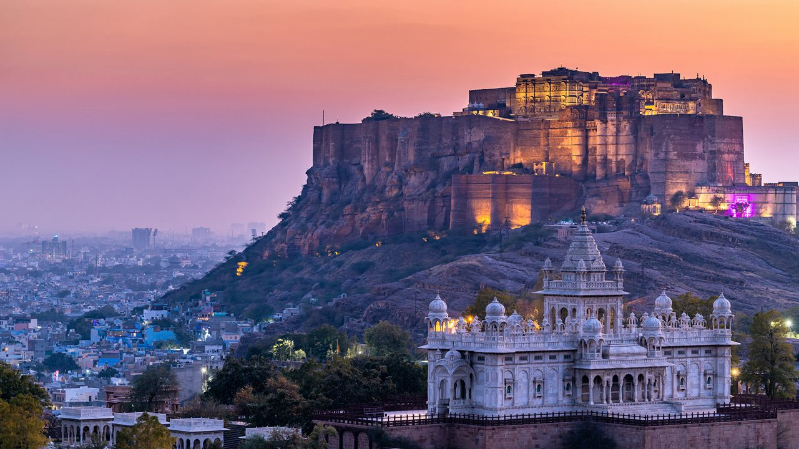
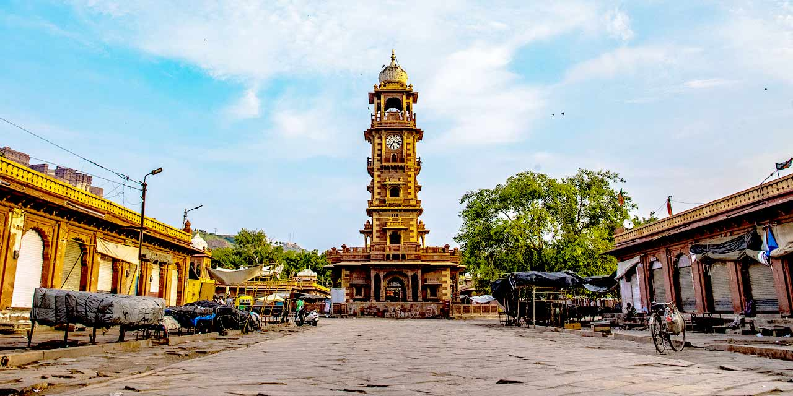

Mehrangarh Fort: The Majestic Citadel
Mehrangarh Fort is one of the largest forts in India, standing tall over the city of Jodhpur.
Fun Fact:
~It was built in 1459 and is known for its stunning architecture and rich history!
Things to Explore at Mehrangarh Fort:
-
The Museum:
Explore the museum showcasing artifacts from the royal family.
-
The Palaces:
Visit the beautiful palaces within the fort, adorned with intricate carvings.
-
The Viewpoint:
Enjoy panoramic views of Jodhpur from the fort's ramparts.
-
The Sound and Light Show:
Experience the evening show that narrates the fort's history.
-
The Fort Walls:
Walk along the massive walls and soak in the historical ambiance.
Why Visit Mehrangarh Fort?
!Because it’s not just a fort, but a journey through Rajasthan’s royal past!
Umaid Bhawan Palace: The Royal Residence
Umaid Bhawan Palace is a magnificent palace that serves as a luxury hotel and museum.
Fun Fact:
~It was built in the 20th century and is one of the largest private residences in the world!
Things to Explore at Umaid Bhawan Palace:
-
The Museum:
Discover the history of the palace and its royal occupants.
-
The Gardens:
Stroll through the beautifully landscaped gardens surrounding the palace.
-
The Architecture:
Admire the Indo-Saracenic architecture and intricate interiors.
-
The Vintage Car Collection:
Explore the collection of vintage cars owned by the royal family.
-
The Luxury Hotel Experience:
Indulge in a royal stay at one of the world's most luxurious hotels.
Why Visit Umaid Bhawan Palace?
!Because it’s a blend of history, luxury, and royal heritage that you can experience firsthand!
Jaswant Thada: The Marble Marvel
Jaswant Thada is a stunning marble cenotaph built in memory of Maharaja Jaswant Singh II.
Fun Fact:
~It’s often referred to as the 'Taj Mahal of Marwar' due to its exquisite marble architecture!
Things to Explore at Jaswant Thada:
-
The Cenotaph:
Marvel at the intricate carvings and the serene ambiance of the cenotaph.
-
The Gardens:
Relax in the beautifully maintained gardens surrounding the monument.
-
The Viewpoint:
Enjoy breathtaking views of Mehrangarh Fort and the city of Jodhpur.
-
The Architecture:
Admire the unique blend of Hindu and Mughal architectural styles.
-
The Peaceful Atmosphere:
Experience the tranquility and spiritual aura of this historical site.
Why Visit Jaswant Thada?
!Because it’s a serene escape that offers a glimpse into Rajasthan’s royal past amidst stunning architecture!

Clock Tower: The Heart of Jodhpur
The Clock Tower is a bustling market area and a landmark in the city, surrounded by vibrant bazaars.
Fun Fact:
~It’s a popular meeting point and a symbol of Jodhpur’s lively culture!
Things to Explore at Clock Tower:
-
The Sardar Market:
Shop for local handicrafts, spices, and textiles in the bustling market.
-
The Local Cuisine:
Try delicious street food and traditional Rajasthani dishes from nearby stalls.
-
The Architecture:
Admire the colonial architecture of the clock tower and surrounding buildings.
-
The Vibrant Atmosphere:
Experience the hustle and bustle of local life in this vibrant area.
-
The Sunset Views:
Enjoy stunning sunset views over the city from the clock tower area.
Why Visit Clock Tower?
!Because it’s a lively hub that captures the essence of Jodhpur’s culture and traditions!
Toorji Ka Jhalra: The Stepwell of Serenity
Toorji Ka Jhalra is a historic stepwell that showcases the architectural brilliance of Rajasthan.
Fun Fact:
~It was built in the 1740s and is a perfect example of traditional Rajasthani engineering!
Things to Explore at Toorji Ka Jhalra:
-
The Architecture:
Marvel at the intricate carvings and unique design of the stepwell.
-
The Water Reservoir:
Learn about the historical significance of stepwells in water conservation.
-
The Peaceful Ambiance:
Enjoy the serene atmosphere away from the city’s hustle and bustle.
-
The Photography Opportunities:
Capture stunning photographs of this architectural gem.
-
The Cultural Significance:
Discover the cultural heritage and history associated with this stepwell.
Why Visit Toorji Ka Jhalra?
!Because it’s a hidden gem that offers a glimpse into Rajasthan’s rich architectural heritage and tranquility!
Osian: The Desert Oasis
Osian is an ancient town known for its temples and desert landscapes, located near Jodhpur.
Fun Fact:
~It’s often referred to as the 'Khajuraho of Rajasthan' due to its stunning temples!
Things to Explore at Osian:
-
The Temples:
Visit the ancient temples dedicated to various deities, showcasing intricate carvings.
-
The Desert Safari:
Experience a thrilling desert safari on camels or jeeps.
-
The Local Culture:
Interact with local villagers and learn about their traditions and lifestyle.
-
The Scenic Beauty:
Enjoy the picturesque desert landscapes and sunset views.
-
The Wildlife:
Spot unique desert wildlife and bird species in the area.
Why Visit Osian?
!Because it’s a perfect blend of history, culture, and adventure in the heart of the Thar Desert!